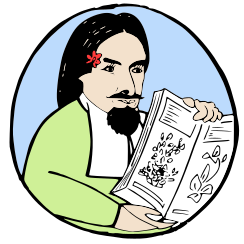

sample videos

web-geo-future

QR
non ho la penna
Ghini Cosa?
ghini è un software libero ed aperto, GPL, nato nel 2004 presso e per l'orto botanico del Belize, è ora utilizzato fra gli altri da: Lovett Pinetum (Missouri), Mackay Regional (Queensland), Jardín Botánico de Quito (Ecuador).
quest'è?
oltre che un software, ghini è un progetto di cooperazione ed apprendimento: è stato utilizzato presso la Universidad la Unión (Tarapoto, San Martín, Perú) e poi la UNAS (Tingo María, Huánuco, Perú) come esempio di sviluppo python test-driven.
chi è il capo?
ora il suo coordinatore Mario Frasca (laureato nel 1994 a Pisa in Scienza dell'Informazione, con due decenni di esperienza lavorativa nei Paesi Bassi), sta cercando, rigorosamente aggratis, persone interessate ad ampliare il progetto.
perché partecipare ad un progetto di software libero?
- puoi dire la tua e il capo non ti licenzia.
- puoi copiare il progetto ed avviarlo per conto tuo.
- puoi venderlo agli orti botanici dell'India e con questo finanziarti il viaggio.
- puoi convincere il capo che la tua idea è migliore.
- puoi convincere i tuoi colleghi che la tua idea è migliore.
- puoi imparare il Python, SQLAlchemy, Node.js, Flask.
- puoi convincere il capo ad utilizzare tutt'altro.
perché botanica
- perché si incontra gente carina.